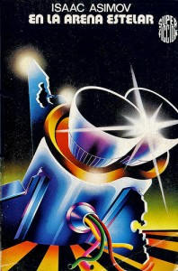

Novelas que leí en Enero/2010
Durante el año realmente siento que me falta tiempo para leer. No para leer el diario o material de estudio, sino para leer por el placer de hacerlo. Leer literatura. A parte de algunos cuentos de Asimov, este enero pude leer 4 novelas. Las 4 muy distintas entre si, pero igualmente entretenidas. Se las paso a comentar, por si alguno tiene ganas de leer y sacó sus vacaciones en febrero (enero ya se fue). Si a alguien le interesa leer alguno, los tengo para prestar:
El enigma de Copérnico
 Autor: Juan-Pierre Luminet
Autor: Juan-Pierre Luminet
Género: Novela histórica
Páginas: 365 (incluyendo notas del autor)
Editorial: Ediciones B/Zeta
ISBN: 978-84-9872-040-2
El primer libro que leí me lo regaló mi tía Lupe para Navidad. Es una versión novelada de la vida de Nicolás Copérnico (si, el que dijo que los planetas se movían al rededor del son y no TODO al rededor de la tierra como se venía creyendo) escrita por un científico francés y es la primera de una serie de 4 entregas titulada Los constructores del cielo.
Me gustó mucho, los capítulos son un poco largos (me gustan más cortos, así uno puede dejar el libro en cualquier momento) pero la trama es atrapante. Desconocía los detalles de la vida de Copérnico, por lo que no se cuanto hay de verdad y cuanto de ficción. Pero sin duda es una buena aproximación para conocer un poco más sobre la historia del mundo.
Los otros libros de la serie son sobre Brahe, Kepler y Newton (el último aún no ha sido escrito).
En la arena estelar
Autor: Isaac asimov
{kind=link}
Género: Ciencia ficción
Páginas: 200
Editorial: Ediciones Martinez Roca
ISBN: 84-270-0516-4
La segunda novela la leí durante mis vacaciones y la compré en una casa de usados en Pinamar. Es una entrega más de Asimov, una especia de aventura de Cowboys por el espacio. En este caso se intenta encontrar un misterioso documento perdido hace muchos años a la vez que el último planeta conquistado por los humanos intenta conquistarlos a los demás para formar un Imperio Galáctico. Por supuesto, la resistencia se levanta para evitar que esto suceda. Aventura, romance (del pícaro que hace Asimov), conspiraciones y un final bien Asimoviano (era MUY norteamericano el tipo... para ser ruso).
Las grietas de Jara
{kind=link}
Género: Policial
Páginas: 250
Editorial: Alfaguara
ISBN: 978-987-04-1296-0
La tercer novela la compré para leer a la vuelta (16 horas en colectivo no se digieren fácil). Compré una edición "económica" 15 pesos más barata que en todas las otras librerías. La verdad, no pude notar la diferencia.
Las grietas de Jara está escrita con esa forma característica de Claudia Piñeiro, un policial urbano, con personajes bien humanos, donde mucha parte de la historia pasa dentro de sus cabezas.
Me gustó más que Las viudas de los jueves, pero menos que Tuya.
El principe de la nieble
 Autor: Carlos Ruiz Zafón
Autor: Carlos Ruiz Zafón
Género: Fantasía/Juvenil
Páginas: 230
Editorial: Booket
ISBN: 978-987-580-321-3
El escritor, Carlos Ruiz Zafón, se hizo famoso hace unos años con su novela La sombra del viento, y a continuación El juego del angel (que transcurre una generación antes que La sombra del viento). Sin embargo, estas no son sus primeras novelas. Zafón cuenta también con una trilogía del género que algunos denominan "Novela juvenil"; personajes sub 18, más fantasía que en sus novelas para "adultos", pero como aclara el autor en el prologo, pueden disfrutarla tanto jovenes como lectores con más años
Comentarios
Comments powered by Disqus